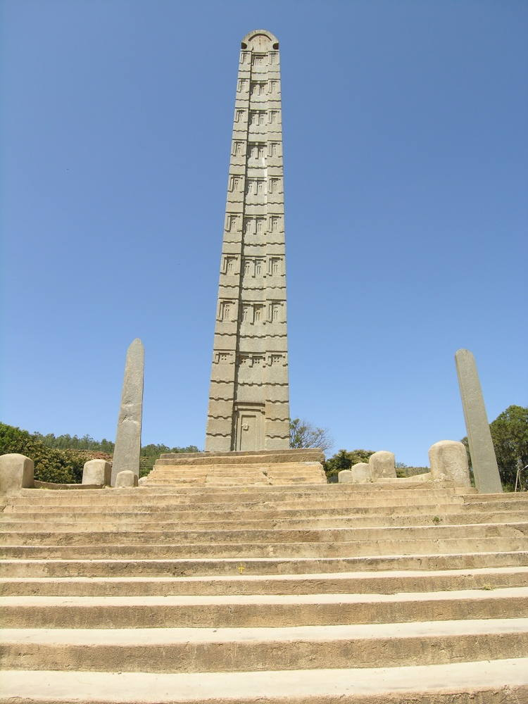
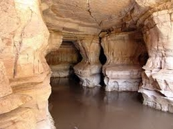
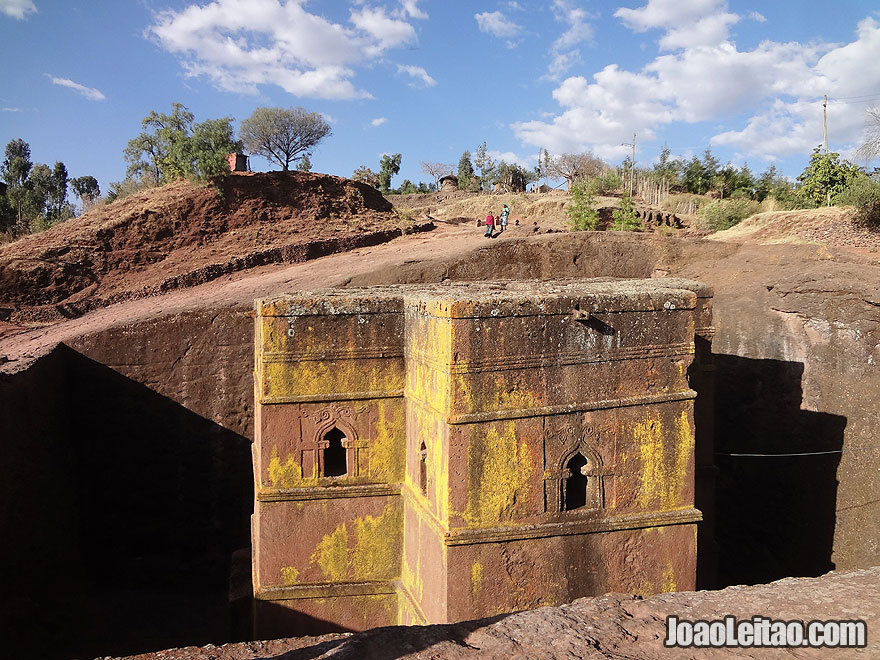
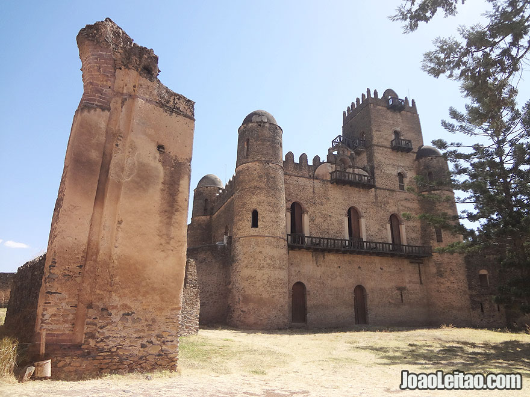
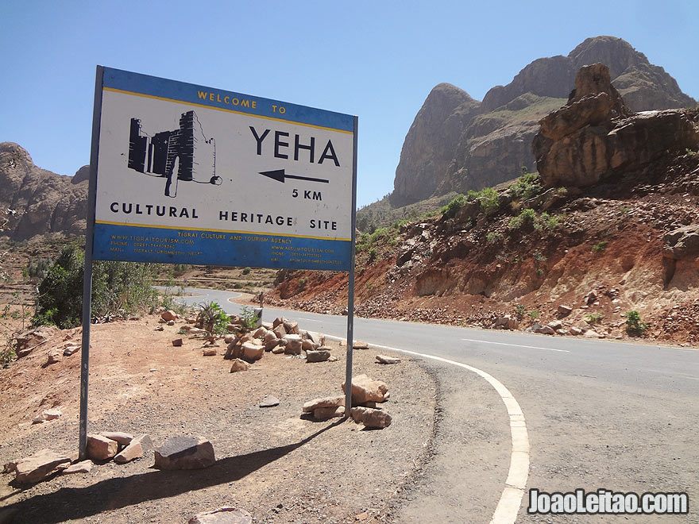
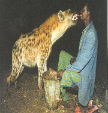

Axum
Axum, Ethiopia's most ancient city and the capital of the historic Axumite state, is the site of many remarkable monolithic stone stelae, or obelisks, the three most important being decorated to represent multi-storied buildings, complete with doors and windows.
The largest obelisk, which was 35 meters long and weighed 500 tons, is the biggest piece of stone ever cut by humanity anywhere in the world but today it lies broken on the ground. Near it stands a smaller but nevertheless most impressive 24-metre-high obelisk - the pride of Ethiopia. A somewhat larger obelisk was taken to Rome, on the orders of the Italian fascist dictator Benito Mussolini, in 1937. All three section of the 1,700-year old Axum obelisk has arrived back in Ethiopia, 68 years after it was looted by Italian fascists. It was eventually dismantled into three pieces in 2004 in preparation for its journey home, an operation which is costing Italy an estimated 6 million euros (£4.1 million). The monument is due to be re-erected after the rainy season.
Axum, in its day, was a great commercial centre, issuing its own currency and trading with Egypt, Arabia, Persia, India and even Ceylon. The settlement was also the site of Ethiopia's oldest church, which dated back to the coming of Christianity as the state religion, early in the 4th Century. The original building has long since disappeared but a structure erected on its site by Emperor Fasiladas in the early 17th Century is still there. A nearby outhouse is the reputed repository of the biblical Ark of the Covenant. This historic relic cannot be seen but visitors there can see and photograph a number of the remarkable crowns that belonged to several notable Ethiopian monarchs of the past.
Just out of the town, the remains of an early Axumite palace, popularly thought to have belonged to the Queen of Sheba, are well worth a visit. The remains are located at Dangur, near the mountain from which the obelisks were originally excavated. The beautifully worked tombs of several ancient Axumite rulers and the local archaeological museum are also worth a visit. About 45 per cent of the Ethiopian population is Muslim. Most of the Christians belonging to the Ethiopian Orthodox Church, whose 4th Century beginnings came long before Europe accepted Christianity. A further small percentage of the population adheres to traditional and other beliefs, including Judaism.
Sof omar cave
Sof Omar Caves Not far from Bale Mountains is one of the world's most spectacular and extensive underground caverns: the Sof Omar cave system. The weib river, which sources from the Bale Mountains National Park, penetrates the caves year round, offering a magnificent view to the visitors. Sof Omar is an extraordinary natural phenomenon of breathtaking beauty. At 15.1 kilometres long, Sof Omar Cave is the longest cave in Ethiopia and the largest system of caves in Africa, through which the Weib River flows.
Sof Omar Caves It is said that Allah revealed the opening to this limestone cave system to Sheikh Sof Omar in the 12th century. The sheikh and his followers used the caves as a mosque, a purpose to which the caves were well suited as they had been eroded into columns, buttresses, domes, vaults, and pillars - a natural architectural marvel still used as a gathering place by local Muslims.
The First religions in this part of Africa were essentially spirit worship and ghost cults in which the most powerful supernatural beings were believed to attach themselves to trees, rocks, and - most forcefully - to caves, which became shrines for prayer and sacrifice. Even today, the visitor to Sof Omar can see many signs of the persistence of such pagan beliefs and practices: a group of men sacrificing a goal; tokens of leather and cloth hung from rocky projections in the cave.
Sof Omar Caves You approach the Sof Omar caves through the tiny village of Sof Omar, perched on the cliffs above the Web River. To the rear of the village is a dark, gaping crevice down which a precipitous narrow footpath winds to the first cave’s floor. Only a few patches of sunlight filter into this dimly lit kingdom, which extends in all directions through vast subterranean passageways of polished white limestone, carved by the river's flood and recess over countless ages.
In this realm of dry, cool caves nature has worked a marvel of architecture - soaring pillars of stone twenty metres (66 feet) high, flying buttresses, fluted archways, and tall airy vaults. Finally, the river itself is reached, a sunless sea flowing through a deep gorge. Standing on a balcony near the roof, one has a spectacular view of the river rushing below. Sof Omar's large central hall, the 'Chamber of Columns' - so named after the colossal limestone pillars that are its dominant feature - is one of the highlights of the cave system. At another part of the network there is a small gap in the rocks through which the river passes, about two and a half metres (eight feet) wide, where a bridge can be made with driftwood to go across. The most direct route through the caves passes these and many other remarkable sights, and takes about an hour at a good walking pace.
Inside the Sof Omar caves, the only living creatures arc bats and fish. Crocodile are to be found in the river nearby but, fortunately, seem to shun the caves themselves. The countryside abounds with wildlife - dik-dik and kudu, serval cat, rock hyrax, giant tortoises, snakes, and lizards, as well as more than fifty species of birds.
Lalibela
Lalibela, a medieval settlement in the Lasta area of Wallo, lies at the centre of an extensive complex of rock churches. Some can be reached by one or two hours' drive, others are a full day's journey. Lalibela has 11 remarkable rock-hewn monolithic churches, believed to have been built by King Lalibela in the late 12th or early 13th Century. These notable structures are carved, inside and out, into the solid rock, and are considered to be among the wonders of the world. Each building is architecturally unique but each reflects beautifully executed craftsmanship, and several are decorated with fascinating paintings. These astonishing edifices remain places of living worship to this day.
Gondar Castle
 Gondar is another destination located in the State, north west of Addis Ababa. Founded by Emperor Fasiledes, Gonder was the capital city of Ethiopia in the 17th and 18th centuries.Emperor Fasiledes and his successors built Palaces within the royal enclosure. The castles of successive emperors who ruled the country from Gondar are surrounded by a 900 meters long wall. As a true evidence of an architectural beauty deeply marked by the country’s ancient civilization, the royal enclosure, Fasil Ghebbi, was registered by UNESCO as s world Heritage site in 1980.
UNESCO has also registered theSimienMountains National Parkwhich is found 140 kilometers north of the historic town of Gonder, the 17th and 18th centuries capital of Ethiopia. The park is one of the first sites to be included in the list of world Heritage in 1978. The park includes one of the most spectacular landscapes in the world with jagged mountain peaks, deep valleys and sharp precipices dropping some 1500 m. The highest peak is Ras Dashen, the highest mountain in Ethiopia and the fourth in Africa, with an altitude of 4620 meters.
Moreover, the park is home to some extremely rare animals that are endemic to Ethiopia such as the Gelada baboon, the Semen fox and the Walia Ibex. There are also varieties of flora in the park found nowhere, but in Ethiopia. The park was listed under endangered sites in 1996 as a result of the decline of the number of Walia Ibex due to human intervention in the park. However, the number of these rare species is now in the rise after the government has started to take positive measures.
Known as home to human origin, the Lower Valley of Awash, found in Afar State, is a site of paleo-anthropological research. Tremendous findings are registered in the area contributing a lot in the search for human origin and evolution. The most spectacular discovery of Lucy, Australopithecus Afarensis, a 3.2 million years old hominid in 1974, paved the way for more achievements in the study of human origin.
The recent achievement with the discovery of 'selam', a fossil that is the most complete and 150,000 years older than Lucy, is another testimony for the importance of the region for the study of human origin. The lower Valley of Awash was included in the list of world heritage sites in 1980.
Listed as a World Heritage site in 1980 because of its importance for the understanding of human evolution, the lower valley of Omo is an important site for the discovery of many human and animal fossils and stone tools in the valley.
Omo is a river that is 760 kilometers long that stretches from the high lands of West Shoa to Lake Turkana, one of the Great Rift Valley lakes. The area is also home to people with diverse cultures and natural beauty with national parks and an amazing flora and fauna.
Known as the walled city, Harar is another historical and beautiful town that was the major commercial center of Islamic learning. In recognition of its cultural heritage, the historic city of Harar, Jugol wall, was registered by UNESCO as world heritage site in 2006. The wall was constructed to protect thecity as its people from the possible attacks.
It is 3.5 kilometer long wall with a height of nearly 4 meters. It has five gates and the wall is still intact and is a symbol of the town. The presence of 99 mosques made Harar to be considered as the fourth holiest city in Islam next to Mecca, Medina and Jerusalem. Most importantly, Harar is a symbol of tolerance and peaceful co-existence of peoples and religions.
In addition, Ethiopia has other UNESCO-registered heritages such as the Tiya stelae and the Konso landscapes, among others.
Yeha
Some 55 km east of Axum is the 5th Century BC temple of Yeha. Its massive walls house Judaic relics and historic artefact.
Harar
The city of Harar is an ancient (1520) and holy city. Always an important trading centre, the city is famous for its ancient buildings, its great city walls and as a centre of learning muslim scholarship ( the town has 99 mosques). The city is well known for its superb handicrafts that include woven textiles, basketware, silverware and handsomely bound books, Harar has been a place of pilgrimage from all over the world for many years.
Harar's attractions are:
- The City Walls
The City Walls, and the narrow streets lined with traditional Harari gegar houses.
- Rimbaud House
A Fine building traditional house dating from the period when the French poet Rimbaud lived in Harar.
- The Hyena Man
As evening falls, local men attract wild hyenas to the city in a bizarre spectacle as they bravely feed these dangerous scavengers.
The Ethiopian experience is one that offers something for everyone. Truly, there is no other place on earth quite like it.
Dire Dawa is city in Harar region, Ethiopia. It is a commercial and industrial center located on the Addis Ababa–Djibouti railroad. Manufactures include processed meat, vegetable oil, textiles, and cement. There are also railroad workshops in the city. Dire Dawa was founded in 1902 when the railroad from Djibouti reached the area, and its growth has resulted largely from trade brought by the railroad.